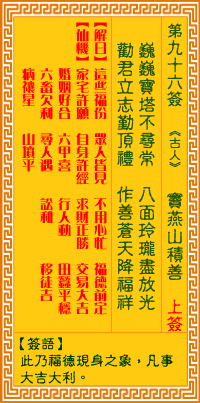

观音灵签第九十六签 【窦燕山积善】 |
 | |||
巍巍宝塔不寻常 八面玲珑尽放光 劝汝志心勤顶礼 天龙拥护降千祥 |
||||
| 【吉凶】 | 上上签 | 【宫位】 | 戌宫 | |
| 【签语】 | 此卦福德现身之象，凡事大吉大利也。 | |||
| 【解曰】 | 这些福份 众人皆见 不用心忙 福德前定 | |||
| 【仙机】 | 此签家宅许愿，自身许经，求财正胜，交易大吉，婚姻好合，六甲喜，行人动，田蚕平稳，六畜欠利，寻人遇，讼和，移徙吉，病禳星， 山坟平。 | |||
| 【详解】 | 高大的宝塔非比寻常，四周晶莹剔透精雕细琢;劝你诚心祈祷膜拜，必有万神降瑞，拥护吉祥。 这此福田，诸人皆现，可用诚心，福德即到。此签福德显现之象，凡事营谋吉利。 本签者。福德显现之象也。凡百事营谋可获利者耶。君之前。此宝塔为耸立云霄巍巍者。八面均放出异彩。啻要君志心勤顶礼。天龙。此吉祥之天兽。为君汝降天 祥者。易言之。这此福田诸人皆现可用诚心福德即到。 此签有”终能如愿”之意。鼓励当事人，凡事有始有终。人人都希望能有功成名就、大富大贵之日，但别忘了”三分天注定，七分靠打拼”的道理。既然有理想、 有梦想，就要靠自己，努力的让它付诸实现。所谓”天助自助者”，与其祈祷上苍，不如将愿望化为实际的行动。凡事只要肯做、肯冲、肯拼，抱持着勇往直前、 积极进取的态度、持之以恒，必有成功之日。 | |||
| 【典故】 | 宋朝时人，名窦禹均，因住在燕山，又叫燕山。初时，燕山为人不正，心术不好，专做伤天害理的事，至到三十岁，还没有儿女。一晚， 他梦到父亲劝他悔过行善，才能挽回天意。燕山从此痛改前非，重新做人，并且广行方便，大做善事。后来生了五个儿子，因管教严明，都有良好成就。他在家贴的门联如下： 为善必昌：为善不昌，祖宗之余殃，殃尽必昌；为恶必减：为恶不减，祖宗之余德，德尽必减。《全德记》故事 | |||